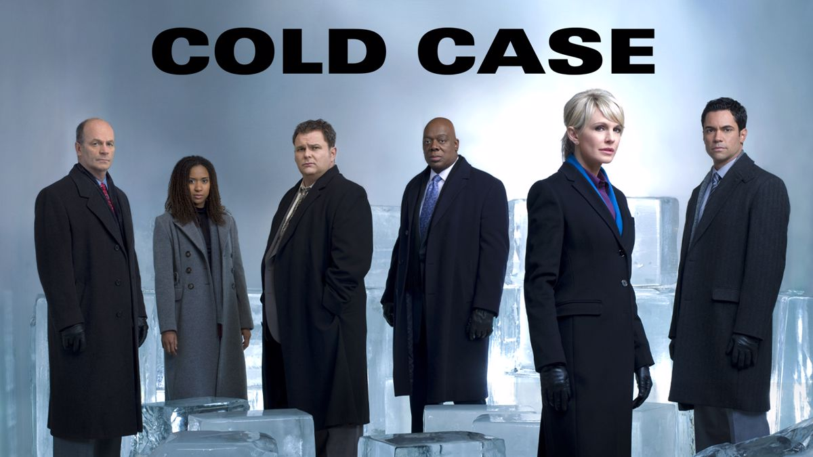

Created by: Meredith Stiehm
Filming Location: Philadelphia, Pennsylvania
Cold Case is an American police procedural crime drama that aired on CBS from September 28, 2003, to May 2, 2010. The series follows Detective Lilly Rush, a homicide detective in the Philadelphia Police Department, as she reopens and investigates unsolved murder cases.
The show is known for its unique storytelling style, often incorporating flashbacks to the time of the crime, as well as its use of era-appropriate music to enhance the storytelling and immerse viewers in the time period of each case.
